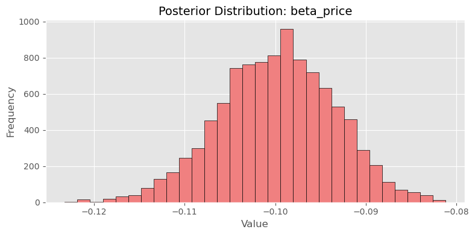

import pandas as pd
df=pd.read_csv('/Users/junyefan/Desktop/Graduate/Course/2025_Spring/MGTA_495_Marketing_Analytics/Week1/quartosite/HW1/project3/conjoint_data.csv')
# Convert categorical variables into dummy variables
df['brand'] = df['brand'].astype(str)
df['ad'] = df['ad'].astype(str)
# Create dummies for brand (Hulu as reference)
brand_dummies = pd.get_dummies(df['brand'], prefix='brand')
brand_dummies.drop(columns=['brand_H'], inplace=True)
# Convert ad to binary: Yes = 1, No = 0
df['ad_binary'] = df['ad'].map({'Yes': 1, 'No': 0})
# Combine into feature matrix
X = pd.concat([
df[['resp', 'task', 'choice', 'price']],
brand_dummies,
df['ad_binary']
], axis=1)
# Rename for clarity
X.rename(columns={
'brand_N': 'brand_netflix',
'brand_P': 'brand_prime'
}, inplace=True)
# Final structure
X = X[['resp', 'task', 'choice', 'brand_netflix', 'brand_prime', 'ad_binary', 'price']]X| resp | task | choice | brand_netflix | brand_prime | ad_binary | price | |
|---|---|---|---|---|---|---|---|
| 0 | 1 | 1 | 1 | True | False | 1 | 28 |
| 1 | 1 | 1 | 0 | False | False | 1 | 16 |
| 2 | 1 | 1 | 0 | False | True | 1 | 16 |
| 3 | 1 | 2 | 0 | True | False | 1 | 32 |
| 4 | 1 | 2 | 1 | False | True | 1 | 16 |
| ... | ... | ... | ... | ... | ... | ... | ... |
| 2995 | 100 | 9 | 1 | False | False | 0 | 12 |
| 2996 | 100 | 9 | 0 | False | True | 1 | 8 |
| 2997 | 100 | 10 | 0 | True | False | 1 | 28 |
| 2998 | 100 | 10 | 0 | False | False | 0 | 24 |
| 2999 | 100 | 10 | 1 | False | False | 0 | 16 |
3000 rows × 7 columns
import numpy as np
from scipy.optimize import minimize
# Define input variables for estimation
X_vars = ['brand_netflix', 'brand_prime', 'ad_binary', 'price']
X_mat = X[X_vars].values
y = X['choice'].values
# Group each choice set (task within respondent) for probability denominator
group_ids = X.groupby(['resp', 'task']).ngroup().values
# Define the negative log-likelihood function
def neg_log_likelihood(beta):
utilities = X_mat @ beta
df_temp = pd.DataFrame({
'group': group_ids,
'utility': utilities,
'choice': y
})
df_temp['exp_u'] = np.exp(df_temp['utility'].astype(float))
# Compute denominator of softmax per choice set
group_sums = df_temp.groupby('group')['exp_u'].transform('sum')
df_temp['log_prob'] = df_temp['utility'] - np.log(group_sums)
# Only keep log probabilities of chosen alternatives
chosen_log_probs = df_temp[df_temp['choice'] == 1]['log_prob']
return -np.sum(chosen_log_probs)
# Initial parameter guess
beta_init = np.zeros(X_mat.shape[1])
# Minimize the negative log-likelihood
result = minimize(neg_log_likelihood, beta_init, method='BFGS')
# Extract results
beta_hat = result.x
hessian_inv = result.hess_inv
standard_errors = np.sqrt(np.diag(hessian_inv))
# Construct 95% confidence intervals
z = 1.96
conf_int = np.vstack([beta_hat - z * standard_errors, beta_hat + z * standard_errors]).T
# Combine into a summary table
param_names = ['beta_netflix', 'beta_prime', 'beta_ads', 'beta_price']
mle_summary = pd.DataFrame({
'parameter': param_names,
'estimate': beta_hat,
'std_error': standard_errors,
'ci_lower': conf_int[:, 0],
'ci_upper': conf_int[:, 1]
})
mle_summary.round(4)| parameter | estimate | std_error | ci_lower | ci_upper | |
|---|---|---|---|---|---|
| 0 | beta_netflix | 0.9412 | 1.4043 | -1.8112 | 3.6936 |
| 1 | beta_prime | 0.5016 | 1.6607 | -2.7534 | 3.7566 |
| 2 | beta_ads | -0.7320 | 0.3449 | -1.4080 | -0.0560 |
| 3 | beta_price | -0.0995 | 0.0084 | -0.1160 | -0.0830 |
import numpy as np
import pandas as pd
import matplotlib.pyplot as plt
# Reuse log-likelihood function from earlier
def log_likelihood(beta):
utilities = X_mat @ beta
df_temp = pd.DataFrame({
'group': group_ids,
'utility': utilities,
'choice': y
})
df_temp['exp_u'] = np.exp(pd.to_numeric(df_temp['utility'], errors='coerce'))
group_sums = df_temp.groupby('group')['exp_u'].transform('sum')
df_temp['log_prob'] = df_temp['utility'] - np.log(group_sums)
return np.sum(df_temp[df_temp['choice'] == 1]['log_prob'])
# Log-prior function
def log_prior(beta):
return (
-0.5 * (beta[0]**2 + beta[1]**2 + beta[2]**2) / 25 # N(0, 5^2)
-0.5 * (beta[3]**2) # N(0, 1^2) for price
)
# Log-posterior
def log_posterior(beta):
return log_likelihood(beta) + log_prior(beta)
# Proposal step: N(0, diag(...))
proposal_sd = np.array([0.05, 0.05, 0.05, 0.005])
# MCMC settings
n_steps = 11000
beta_draws = np.zeros((n_steps, 4))
beta_current = np.zeros(4)
log_post_current = log_posterior(beta_current)
# Run Metropolis-Hastings
for t in range(1, n_steps):
beta_proposal = beta_current + np.random.normal(0, proposal_sd)
log_post_proposal = log_posterior(beta_proposal)
accept_ratio = np.exp(log_post_proposal - log_post_current)
if np.random.rand() < accept_ratio:
beta_current = beta_proposal
log_post_current = log_post_proposal
beta_draws[t, :] = beta_current
# Drop first 1000 draws (burn-in)
posterior_samples = beta_draws[1000:, :]
param_names = ['beta_netflix', 'beta_prime', 'beta_ads', 'beta_price']
# Trace plot for beta_price
plt.figure(figsize=(10, 4))
plt.plot(posterior_samples[:, 3])
plt.title("Trace Plot: beta_price")
plt.xlabel("Iteration")
plt.ylabel("Value")
plt.grid(True)
plt.show()
# Histogram for beta_price
plt.hist(posterior_samples[:, 3], bins=30, edgecolor='k')
plt.title("Posterior Distribution: beta_price")
plt.xlabel("Value")
plt.ylabel("Frequency")
plt.grid(True)
plt.show()
# Summary statistics
posterior_df = pd.DataFrame(posterior_samples, columns=param_names)
posterior_summary = posterior_df.describe(percentiles=[0.025, 0.975]).T
posterior_summary['mean'] = posterior_df.mean()
posterior_summary['std'] = posterior_df.std()
posterior_summary['2.5%'] = posterior_df.quantile(0.025)
posterior_summary['97.5%'] = posterior_df.quantile(0.975)
posterior_summary[['mean', 'std', '2.5%', '97.5%']].round(4)| mean | std | 2.5% | 97.5% | |
|---|---|---|---|---|
| beta_netflix | 0.9427 | 0.1096 | 0.7156 | 1.1490 |
| beta_prime | 0.5026 | 0.1060 | 0.2870 | 0.7043 |
| beta_ads | -0.7316 | 0.0885 | -0.9113 | -0.5526 |
| beta_price | -0.0998 | 0.0064 | -0.1127 | -0.0879 |
import matplotlib.pyplot as plt
param_names = ['beta_netflix', 'beta_prime', 'beta_ads', 'beta_price']
# Use a consistent style
plt.style.use('seaborn-whitegrid')
# 🎯 Trace plot for beta_price
plt.figure(figsize=(10, 4))
plt.plot(posterior_samples[:, 3], color='royalblue', linewidth=1)
plt.title("Trace Plot: beta_price", fontsize=14)
plt.xlabel("Iteration", fontsize=12)
plt.ylabel("Value", fontsize=12)
plt.grid(True)
plt.tight_layout()
plt.show()
# 🎯 Histogram for beta_price
plt.figure(figsize=(8, 4))
plt.hist(posterior_samples[:, 3], bins=30, color='lightcoral', edgecolor='black')
plt.title("Posterior Distribution: beta_price", fontsize=14)
plt.xlabel("Value", fontsize=12)
plt.ylabel("Frequency", fontsize=12)
plt.grid(True)
plt.tight_layout()
plt.show()--------------------------------------------------------------------------- FileNotFoundError Traceback (most recent call last) File /opt/miniconda3/lib/python3.12/site-packages/matplotlib/style/core.py:137, in use(style) 136 try: --> 137 style = _rc_params_in_file(style) 138 except OSError as err: File /opt/miniconda3/lib/python3.12/site-packages/matplotlib/__init__.py:870, in _rc_params_in_file(fname, transform, fail_on_error) 869 rc_temp = {} --> 870 with _open_file_or_url(fname) as fd: 871 try: File /opt/miniconda3/lib/python3.12/contextlib.py:137, in _GeneratorContextManager.__enter__(self) 136 try: --> 137 return next(self.gen) 138 except StopIteration: File /opt/miniconda3/lib/python3.12/site-packages/matplotlib/__init__.py:847, in _open_file_or_url(fname) 846 fname = os.path.expanduser(fname) --> 847 with open(fname, encoding='utf-8') as f: 848 yield f FileNotFoundError: [Errno 2] No such file or directory: 'seaborn-whitegrid' The above exception was the direct cause of the following exception: OSError Traceback (most recent call last) Cell In[10], line 6 3 param_names = ['beta_netflix', 'beta_prime', 'beta_ads', 'beta_price'] 5 # Use a consistent style ----> 6 plt.style.use('seaborn-whitegrid') 8 # 🎯 Trace plot for beta_price 9 plt.figure(figsize=(10, 4)) File /opt/miniconda3/lib/python3.12/site-packages/matplotlib/style/core.py:139, in use(style) 137 style = _rc_params_in_file(style) 138 except OSError as err: --> 139 raise OSError( 140 f"{style!r} is not a valid package style, path of style " 141 f"file, URL of style file, or library style name (library " 142 f"styles are listed in `style.available`)") from err 143 filtered = {} 144 for k in style: # don't trigger RcParams.__getitem__('backend') OSError: 'seaborn-whitegrid' is not a valid package style, path of style file, URL of style file, or library style name (library styles are listed in `style.available`)
import matplotlib.pyplot as plt
# 使用 matplotlib 内置å¯ç”¨æ ·å¼
plt.style.use('ggplot') # 或 'bmh', 'classic', 'seaborn-v0_8-whitegrid'
# Trace plot
plt.figure(figsize=(10, 4))
plt.plot(posterior_samples[:, 3], color='royalblue', linewidth=1)
plt.title("Trace Plot: beta_price", fontsize=14)
plt.xlabel("Iteration", fontsize=12)
plt.ylabel("Value", fontsize=12)
plt.grid(True)
plt.tight_layout()
plt.show()
# Histogram
plt.figure(figsize=(8, 4))
plt.hist(posterior_samples[:, 3], bins=30, color='lightcoral', edgecolor='black')
plt.title("Posterior Distribution: beta_price", fontsize=14)
plt.xlabel("Value", fontsize=12)
plt.ylabel("Frequency", fontsize=12)
plt.grid(True)
plt.tight_layout()
plt.show()
posterior_summary[['mean', 'std', '2.5%', '97.5%']] | mean | std | 2.5% | 97.5% | |
|---|---|---|---|---|
| beta_netflix | 0.942666 | 0.109552 | 0.715553 | 1.149033 |
| beta_prime | 0.502566 | 0.105952 | 0.287028 | 0.704273 |
| beta_ads | -0.731626 | 0.088473 | -0.911344 | -0.552625 |
| beta_price | -0.099829 | 0.006369 | -0.112747 | -0.087856 |